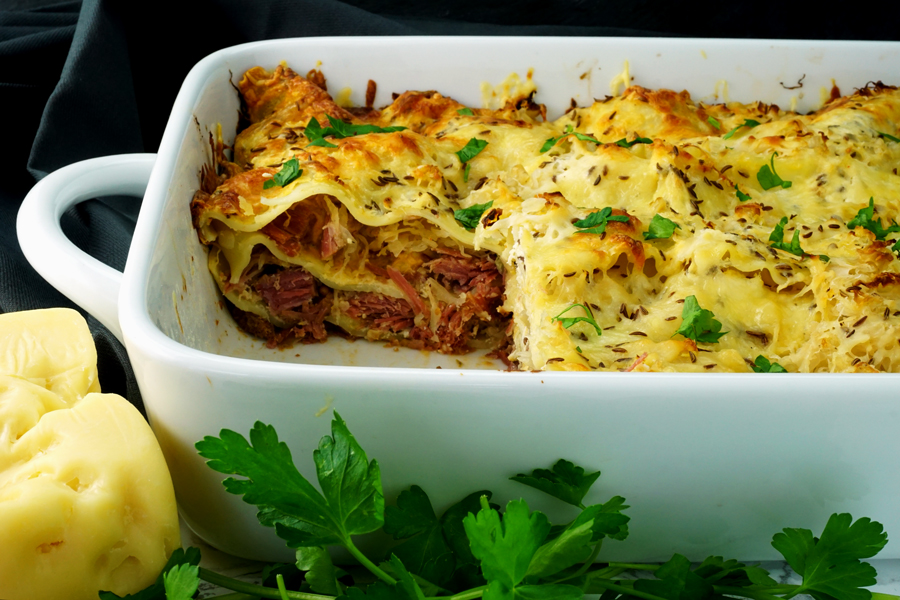

Outback Lasagna

Outback Lasagna freshly made
Description
A delicious new take on the classic Lasagna
Ingredients:
- 2.5 pounds shredded, fully-cooked corned beef, see recipe notes below
- (16-ounce) box lasagna noodles, cooked al dente
- 16 ounces sauerkraut, drained
- 2.5 cups swiss cheese, grated
- 1.5 cups mozzarella cheese, grated
- 1/2 cup parmesan cheese, grated and divided
- 14 ounces 1000 island dressing, divided
- 2 eggs
- 16 ounces ricotta cheese
- 1/4 teaspoon salt
- 1/4 teaspoon pepper
- 2 tablespoons caraway seeds, plus more for garnish
- 2 tablespoons fresh parsley, plus more for garnish
Baking Instructions:
- Preheat oven to 375 degrees
- While oven preheats, butter baking pan
- Next, combine corned beef with 1 1/2 cups of 1000 island dressing and set aside
- Then, in a separate large mixing bowl, whisk two eggs.
Add ricotta cheese, 1/4 cup parmesan cheese, 1/4 cup 1000 island dressing
and stir until fully combined. Season with salt, pepper, caraway seeds and
parsley and mix until everything is blended. Set mixture aside.
- Grate some swiss, mozzarella, and remaining parmesan cheeses to create a three-cheese blend
- Start assembling the lasagna in the baking pan. Note: you'll have about 3-4 layers of each
filling so do your best to divide it equally.
- Begin with a layer of the corned beef mixture. Then lay down a layer of cooked lasagna noodles to
completely cover the meat layer. Next, spread a little of the ricotta mixture over the noodles.
Add grated cheeses to your liking.
- Repeat the order of ingredients two mor times, ending with a layer of the corned beef mixture. Top
the lasagna with any of the remaining cheese blend. Or, by all means(and highly encouraged), grate
some more cheese, for an extra cheesy layer
- Tightly cover your baking pan with tin foil and place into your preheated oven. Bake 30 minutes and
then uncover and bake for an additional 20 minutes. You'll know it's done when the cheese is melted,
bubbling,
starting to turn a nice golden brown.
- Finally, let it set for 5-10 minutes before serving and enjoy your scrumptious Outback Lasagna.